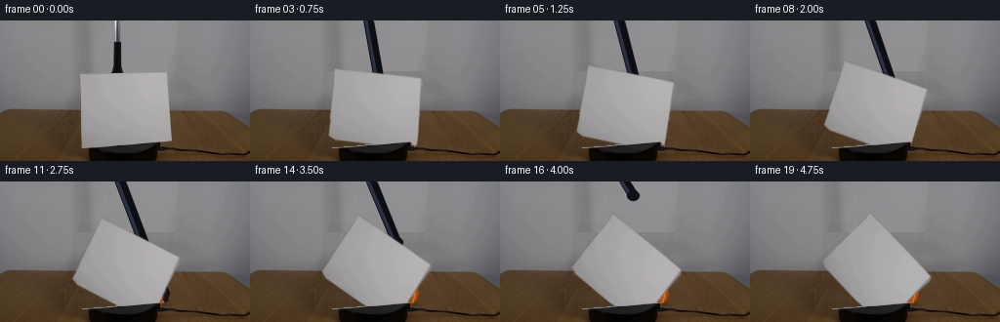
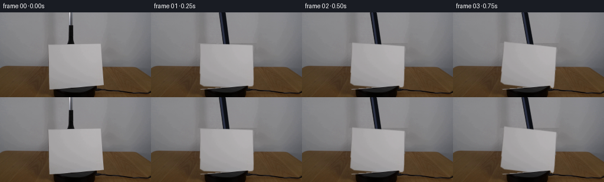
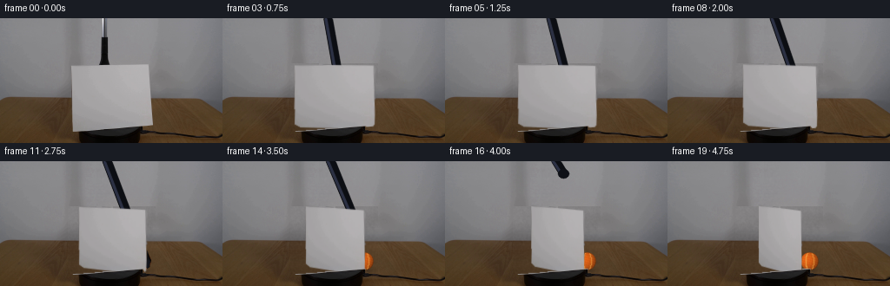
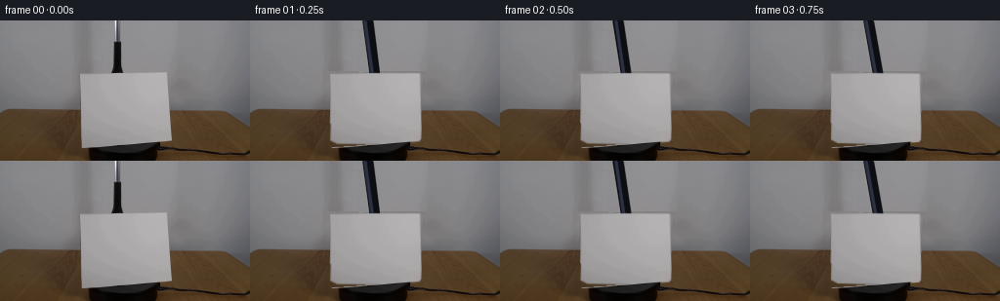

CODING AGENTS AS PIXEL WORLD MODELS
traex/GPT-5.6-Sol · 0005
点击播放 · 原生 RGB 像素
逐轮保存的候选
回放视频、检查图与代码变化。
每份候选均可单独播放。实际图片检查记录在下方工具轨迹中。
候选 01播放与检查图
点击播放 · 原生 RGB 像素


展开代码变化
--- 上一保存版本
+++ 本次保存版本
@@ -0,0 +1,193 @@
+from pathlib import Path
+import cv2
+import numpy as np
+from PIL import Image
+import artifact_io
+
+ROOT = Path(__file__).resolve().parent
+H, W = 144, 256
+
+def softstep(x):
+ x = np.clip(x, 0.0, 1.0)
+ return x*x*(3.0-2.0*x)
+
+def make_clean_plate(src):
+ """Remove the movable sheet and grabber using the local room/table colors."""
+ plate = src.astype(np.float32).copy()
+ rng = np.random.default_rng(4711)
+ noise = cv2.GaussianBlur(rng.normal(0, 1, (H, W)).astype(np.float32), (0, 0), .72)
+ noise /= max(noise.std(), .01)
+
+ # The sheet covers x=82..173. Continue each scanline smoothly between
+ # samples immediately to its left and right. This is only exposed at the
+ # swept corners of the rotating sheet.
+ for y in range(52, 130):
+ xl, xr = 76, 181
+ left = src[y, xl-4:xl+3].astype(np.float32).mean(axis=0)
+ right = src[y, xr-2:xr+5].astype(np.float32).mean(axis=0)
+ for x in range(78, 179):
+ u = (x-78)/100.0
+ # preserve the broad illumination gradient of the locked shot
+ c = left*(1-u) + right*u
+ plate[y, x] = c + noise[y, x]*1.25
+
+ # Above the sheet, erase the narrow original vertical grabber. Neighboring
+ # wall is almost neutral and varies only slowly horizontally.
+ for y in range(0, 55):
+ a = src[y, 104:111].astype(np.float32).mean(axis=0)
+ b = src[y, 131:138].astype(np.float32).mean(axis=0)
+ for x in range(111, 130):
+ u = (x-111)/18.0
+ plate[y, x] = a*(1-u) + b*u + noise[y, x]*0.8
+ return np.clip(plate, 0, 255).astype(np.uint8)
+
+def sheet_mask():
+ m = np.zeros((H, W), np.uint8)
+ # Slightly irregular real cardstock silhouette from the source frame.
+ cv2.fillPoly(m, [np.array([[82,54],[171,54],[173,57],[174,121],
+ [171,126],[91,126],[84,123]], np.int32)], 255)
+ return cv2.GaussianBlur(m, (0,0), .55)
+
+def over(dst, rgb, alpha):
+ a = alpha.astype(np.float32)[...,None] / 255.0
+ return np.clip(dst.astype(np.float32)*(1-a) + rgb.astype(np.float32)*a, 0, 255).astype(np.uint8)
+
+def draw_ball(center, radius=10):
+ """Shaded orange tennis ball with fuzzy nap and a curved pale seam."""
+ cx, cy = center
+ yy, xx = np.mgrid[0:H, 0:W].astype(np.float32)
+ dx, dy = xx-cx, yy-cy
+ d = np.sqrt(dx*dx+dy*dy)
+ alpha = np.clip((radius+.65-d)*210, 0, 255).astype(np.uint8)
+ z = np.sqrt(np.clip(1-(d/radius)**2, 0, 1))
+ # upper-left photographic key light plus darker lower rim
+ nx, ny = dx/radius, dy/radius
+ light = np.clip(.54 + .44*(z*.72 - nx*.36 - ny*.25), .22, 1.0)
+ base = np.zeros((H,W,3), np.float32)
+ base[:,:,0] = 238*light + 15
+ base[:,:,1] = 105*light + 7
+ base[:,:,2] = 22*light + 4
+ # tiny deterministic felt grain, restricted to sphere
+ grain = (np.sin(xx*2.71 + yy*.83) + np.sin(xx*.67-yy*2.19))*2.2
+ base += grain[...,None]
+ rgb = np.clip(base,0,255).astype(np.uint8)
+
+ # characteristic curved tennis-ball seam, visible but not cartoon-heavy
+ seam = np.zeros((H,W), np.uint8)
+ pts1=[]; pts2=[]
+ for k in np.linspace(-.92,.92,35):
+ y = cy + k*radius
+ x = cx - .44*radius + .29*radius*(k*k)
+ pts1.append((int(round(x)),int(round(y))))
+ x2 = cx + .49*radius - .25*radius*(k*k)
+ pts2.append((int(round(x2)),int(round(y))))
+ cv2.polylines(seam,[np.array(pts1)],False,190,1,cv2.LINE_AA)
+ cv2.polylines(seam,[np.array(pts2)],False,140,1,cv2.LINE_AA)
+ seam = cv2.bitwise_and(seam, seam, mask=(d<radius-.6).astype(np.uint8)*255)
+ sa = seam.astype(np.float32)/255.0
+ rgb = np.clip(rgb.astype(np.float32)*(1-sa[...,None]) + np.array([246,176,76])*sa[...,None],0,255).astype(np.uint8)
+ return rgb, alpha
+
+def draw_shadow(img, cx, cy, strength=1.0):
+ yy,xx=np.mgrid[0:H,0:W]
+ q=((xx-cx)/12.5)**2+((yy-cy)/3.0)**2
+ a=(np.exp(-q*1.7)*75*strength).astype(np.uint8)
+ dark=np.zeros_like(img)+np.array([28,24,21],np.uint8)
+ return over(img,dark,a)
+
+def grabber_layer(target, retract=0.0, opacity=1.0):
+ """A slim blue-black laboratory grabber entering from above."""
+ tx, ty = target
+ rgb=np.zeros((H,W,3),np.uint8)
+ a=np.zeros((H,W),np.uint8)
+ # Handle is slightly articulated while carrying the ball behind the card.
+ topx=120.0 + 4.0*retract
+ v=np.array([tx-topx, ty+8.0],np.float32)
+ L=max(float(np.linalg.norm(v)),1); n=np.array([-v[1],v[0]])/L
+ p0=np.array([topx,-10.0]); p1=np.array([tx,ty-8.0])
+ poly=np.array([p0+n*4.6,p1+n*4.6,p1-n*4.6,p0-n*4.6],np.int32)
+ cv2.fillPoly(a,[poly],int(250*opacity),cv2.LINE_AA)
+ cv2.fillPoly(rgb,[poly],(10,12,17),cv2.LINE_AA)
+ # desaturated navy enamel highlight down the left edge
+ cv2.line(rgb,tuple((p0+n*2.5).astype(int)),tuple((p1+n*2.5).astype(int)),(43,48,67),2,cv2.LINE_AA)
+ cv2.line(a,tuple((p0+n*2.5).astype(int)),tuple((p1+n*2.5).astype(int)),int(250*opacity),3,cv2.LINE_AA)
+ # joint and opposing gripping fingers; these remain occluded while carrying
+ # the ball, and are briefly seen as the tool withdraws.
+ cv2.ellipse(rgb,(int(tx),int(ty-8)),(6,5),0,0,360,(13,15,21),-1,cv2.LINE_AA)
+ cv2.ellipse(a,(int(tx),int(ty-8)),(6,5),0,0,360,int(250*opacity),-1,cv2.LINE_AA)
+ if retract < .12:
+ for side in (-1,1):
+ q0=(int(tx+side*3),int(ty-7)); q1=(int(tx+side*7),int(ty+2)); q2=(int(tx+side*6),int(ty+8))
+ cv2.line(rgb,q0,q1,(12,14,19),4,cv2.LINE_AA); cv2.line(rgb,q1,q2,(17,20,29),3,cv2.LINE_AA)
+ cv2.line(a,q0,q1,int(250*opacity),5,cv2.LINE_AA); cv2.line(a,q1,q2,int(250*opacity),4,cv2.LINE_AA)
+ return rgb,a
+
+def rotated_sheet(src, alpha0, degrees):
+ """Premultiplied multisample warp gives restrained real-time motion blur."""
+ pivot=(128.0,91.0)
+ acc_rgb=np.zeros((H,W,3),np.float32); acc_a=np.zeros((H,W),np.float32)
+ for da,w in [(-.42,.24),(0,.52),(.42,.24)]:
+ M=cv2.getRotationMatrix2D(pivot,-(degrees+da),1.0) # negative OpenCV angle = clockwise
+ aa=cv2.warpAffine(alpha0,M,(W,H),flags=cv2.INTER_LINEAR,borderValue=0).astype(np.float32)/255
+ prem=src.astype(np.float32)*(alpha0[...,None].astype(np.float32)/255)
+ rr=cv2.warpAffine(prem,M,(W,H),flags=cv2.INTER_LINEAR,borderValue=0)
+ acc_a += aa*w; acc_rgb += rr*w
+ rgb=np.divide(acc_rgb, np.maximum(acc_a[...,None],1e-5), out=np.zeros_like(acc_rgb), where=acc_a[...,None]>1e-5)
+ return np.clip(rgb,0,255).astype(np.uint8), np.clip(acc_a*255,0,255).astype(np.uint8)
+
+def main():
+ src=np.array(Image.open(ROOT/'first_frame.png').convert('RGB'))
+ plate=make_clean_plate(src)
+ card_a=sheet_mask()
+
+ # Foreground lip of the black support, so the rotating sheet remains seated
+ # in the apparatus rather than appearing pasted over it.
+ gray=cv2.cvtColor(src,cv2.COLOR_RGB2GRAY)
+ support=np.zeros((H,W),np.uint8)
+ support[(np.indices((H,W))[0]>=125)&(np.indices((H,W))[1]>=88)&
+ (np.indices((H,W))[1]<=166)&(gray<58)] = 255
+ support=cv2.dilate(support,np.ones((3,3),np.uint8),iterations=1)
+ support=cv2.GaussianBlur(support,(0,0),.55)
+
+ frames=[]
+ for f in range(20):
+ if f==0:
+ frames.append(src.copy()); continue
+ t=f/19.0
+ # Constant-framerate clockwise rotation with a short physical spin-up.
+ angle=47.0*(.88*t + .12*softstep(t))
+ im=plate.copy()
+
+ # The held ball travels down and to the back-right entirely behind the
+ # opaque card. It is released at about 3 seconds.
+ carry=softstep(min(f/11.0,1.0))
+ bx=128*(1-carry)+163*carry
+ by=72*(1-carry)+115*carry
+ im=draw_shadow(im,bx,126, .35+ .65*carry)
+ ball,ba=draw_ball((bx,by),10.2)
+ im=over(im,ball,ba)
+
+ if f<=11:
+ grab,ga=grabber_layer((bx,by-2),0.0,1.0)
+ im=over(im,grab,ga)
+ else:
+ # After opening, the tool rises out of the locked shot while the
+ # orange ball stays where it was placed.
+ r=softstep((f-11)/8.0)
+ gx=163*(1-r)+124*r
+ gy=113*(1-r)+(-20)*r
+ grab,ga=grabber_layer((gx,gy),r,1.0)
+ im=over(im,grab,ga)
+
+ card,ca=rotated_sheet(src,card_a,angle)
+ im=over(im,card,ca)
+ im=over(im,src,support)
+ frames.append(im)
+
+ frames=np.stack(frames).astype(np.uint8)
+ assert frames.shape==(20,144,256,3)
+ assert np.array_equal(frames[0],src)
+ artifact_io.save(frames,ROOT)
+
+if __name__=='__main__':
+ main()
候选 02播放与检查图
点击播放 · 原生 RGB 像素


展开代码变化
--- 上一保存版本
+++ 本次保存版本
@@ -123,14 +123,32 @@
return rgb,a
def rotated_sheet(src, alpha0, degrees):
- """Premultiplied multisample warp gives restrained real-time motion blur."""
- pivot=(128.0,91.0)
+ """Turn the upright sheet clockwise about its vertical axis.
+
+ The destination quadrilateral is an elementary pinhole projection of a
+ thin vertical rectangle. In particular, this is yaw/foreshortening on the
+ tabletop, not an implausible rotation of the card in the image plane.
+ """
+ source=np.float32([[82,54],[171,54],[174,126],[84,126]])
acc_rgb=np.zeros((H,W,3),np.float32); acc_a=np.zeros((H,W),np.float32)
for da,w in [(-.42,.24),(0,.52),(.42,.24)]:
- M=cv2.getRotationMatrix2D(pivot,-(degrees+da),1.0) # negative OpenCV angle = clockwise
- aa=cv2.warpAffine(alpha0,M,(W,H),flags=cv2.INTER_LINEAR,borderValue=0).astype(np.float32)/255
+ th=np.deg2rad(degrees+da)
+ c,s=np.cos(th),np.sin(th)
+ # Clockwise as viewed from above: left edge recedes and rises, while
+ # the right edge approaches the camera and grows very slightly.
+ xl=128-46*c*(1-.045*s); xr=128+46*c*(1+.045*s)
+ depth=6.0*s
+ far_scale=1-.055*s; near_scale=1+.055*s
+ dest=np.float32([
+ [xl, 91+(54-91)*far_scale-depth],
+ [xr, 91+(54-91)*near_scale+depth],
+ [xr, 91+(126-91)*near_scale+depth],
+ [xl, 91+(126-91)*far_scale-depth],
+ ])
+ M=cv2.getPerspectiveTransform(source,dest)
+ aa=cv2.warpPerspective(alpha0,M,(W,H),flags=cv2.INTER_LINEAR,borderValue=0).astype(np.float32)/255
prem=src.astype(np.float32)*(alpha0[...,None].astype(np.float32)/255)
- rr=cv2.warpAffine(prem,M,(W,H),flags=cv2.INTER_LINEAR,borderValue=0)
+ rr=cv2.warpPerspective(prem,M,(W,H),flags=cv2.INTER_LINEAR,borderValue=0)
acc_a += aa*w; acc_rgb += rr*w
rgb=np.divide(acc_rgb, np.maximum(acc_a[...,None],1e-5), out=np.zeros_like(acc_rgb), where=acc_a[...,None]>1e-5)
return np.clip(rgb,0,255).astype(np.uint8), np.clip(acc_a*255,0,255).astype(np.uint8)
@@ -155,7 +173,7 @@
frames.append(src.copy()); continue
t=f/19.0
# Constant-framerate clockwise rotation with a short physical spin-up.
- angle=47.0*(.88*t + .12*softstep(t))
+ angle=58.0*(.88*t + .12*softstep(t))
im=plate.copy()
# The held ball travels down and to the back-right entirely behind the
可观测工具轨迹
实际执行的命令与返回图片。
命令 1exit 0
/bin/bash -lc "cat GENERATION_RULES.md && printf '\\n---PROMPT---\\n' && cat prompt.txt"
命令 2exit 0
/bin/bash -lc "find . -maxdepth 2 -type f -printf '%p %s bytes\\n' | sort"
命令 3exit 0
/bin/bash -lc "python3 - <<'PY'
from PIL import Image
import numpy as np
im=np.array(Image.open('first_frame.png').convert('RGB'))
print(im.shape, im.min(), im.max(), im.mean((0,1)))
# dominant quant colors
q=(im//16)*16
u,c=np.unique(q.reshape(-1,3),axis=0,return_counts=True)
for i in np.argsort(c)[-30:][::-1]: print(c[i],u[i])
PY"命令 4exit 0
/bin/bash -lc "cat artifact_io.py && python3 - <<'PY'
import cv2, numpy as np
from PIL import Image
im=np.array(Image.open('first_frame.png').convert('RGB'))
# classes
masks={
'orange':(im[:,:,0]>120)&(im[:,:,0]>im[:,:,1]*1.25)&(im[:,:,1]>35)&(im[:,:,1]<150)&(im[:,:,2]<80),
'blue':(im[:,:,2]>im[:,:,0]*1.2)&(im[:,:,2]>im[:,:,1]*1.05)&(im[:,:,2]>50),
'nearblack':im.max(2)<40,
'neutralbright':(im.max(2)-im.min(2)<15)&(im.mean(2)>140),
'neutralgray':(im.max(2)-im.min(2)<20)&(im.mean(2)>90),
'wood':(im[:,:,0]>im[:,:,1]*1.25)&(im[:,:,1]>im[:,:,2]*1.15)&(im[:,:,0]>50)
}
for name,m in masks.items():
n, lab,stats,cen=cv2.connectedComponentsWithStats(m.astype('uint8'),8)
print('\\n',name, m.sum())
for j in np.argsort(stats[1:,4])[-10:][::-1]+1:
x,y,w,h,a=stats[j]; print(' ',a,(x,y,w,h),tuple(np.round(cen[j],1)))
# per 12 pix block classify dominant custom chars
for y in range(0,144,6):
line=''
for x in range(0,256,4):
b=im[y:y+6,x:x+4].mean((0,1)); r,g,bl=b
if max(b)<30: ch='K'
elif r>g*1.3 and g>bl*1.2: ch='W' # wood/orange
elif bl>r*1.2 and bl>g*1.05: ch='B'
elif max(b)-min(b)<12:
ch='.' if np.mean(b)>145 else '-' if np.mean(b)>95 else 'd'
else: ch='g'
line+=ch
print(f'{y:03}',line)
PY"命令 5exit 0
/bin/bash -lc "python3 - <<'PY'
import cv2, numpy as np
im=cv2.imread('first_frame.png')
hsv=cv2.cvtColor(im,cv2.COLOR_BGR2HSV)
for lo in [20,30,40,50,60,80,100]: print('sat>',lo,(hsv[:,:,1]>lo).sum())
# hue histogram where sat>25
for h in range(0,180,10):
m=(hsv[:,:,0]>=h)&(hsv[:,:,0]<h+10)&(hsv[:,:,1]>25)
if m.sum():
ys,xs=np.where(m); print(h,m.sum(),(xs.min(),ys.min(),xs.max(),ys.max()),np.mean(im[ys,xs][:,::-1],0))
# top saturation pixels
flat=np.argsort(hsv[:,:,1].ravel())[-200:]
y,x=np.unravel_index(flat,hsv.shape[:2])
for k in range(-1,-101,-10):
yy,xx=y[k],x[k]; print(xx,yy,'RGB',im[yy,xx,::-1], 'hsv',hsv[yy,xx])
PY"命令 6exit 0
/bin/bash -lc "python3 - <<'PY'
import cv2,numpy as np
from PIL import Image
im=np.array(Image.open('first_frame.png').convert('RGB'))
g=cv2.cvtColor(im,cv2.COLOR_RGB2GRAY)
# Print grid grayscale each 2 pixels for central x60:200, y0:132 via chars
chars='@%#*+=-:. '
for y in range(0,132,3):
s=''
for x in range(55,205,3):
v=g[y:y+3,x:x+3].mean(); s+=chars[min(9,int(v/256*10))]
print(f'{y:03} {s}')
# horizontal stable-color runs approximate at selected y quantized grayscale bins
for y in [0,5,10,15,20,22,25,30,35,40,45,50,52,53,54,55,60,70,80,90,95,100,110,120,124,125,126,130,135,140,143]:
vals=np.round(g[y]/8).astype(int)
runs=[]; st=0
for x in range(1,256):
if vals[x]"'!=vals[st]:
if x-st>=4:runs.append((st,x-1,int(vals[st]*8)))
st=x
if 256-st>=4:runs.append((st,255,int(vals[st]*8)))
print(y,runs)
PY'命令 7exit 0
/bin/bash -lc "python3 - <<'PY'
from PIL import Image
import numpy as np,cv2
im=np.array(Image.open('first_frame.png').convert('RGB'))
# sample regions, colorful connected comps saturation > 5, 10, 15 excluding wood y>90
hsv=cv2.cvtColor(im,cv2.COLOR_RGB2HSV)
for th in [3,5,8,10,15,20]:
m=(hsv[:,:,1]>th)&(np.indices(hsv.shape[:2])[0]<90)
n,lab,stats,cen=cv2.connectedComponentsWithStats(m.astype('uint8'),8)
print('\\nTH',th,'sum',m.sum())
for j in np.argsort(stats[1:,4])[-8:][::-1]+1:
x,y,w,h,a=stats[j]; print(a,(x,y,w,h),np.round(cen[j],1))
# each pixel row in tool area condensed exact RGB average and min/max
for y in range(0,56):
p=im[y,105:135]
# runs by grayscale broad: list x ranges under 60
m=p.mean(1)<60
xs=np.where(m)[0]+105
if len(xs): print(y,xs.min(),xs.max(),len(xs), 'darkest',p[p.mean(1).argmin()].tolist())
PY"命令 8exit 0
/bin/bash -lc "python3 - <<'PY'
import cv2,numpy as np
from PIL import Image
im=np.array(Image.open('first_frame.png').convert('RGB')); g=cv2.cvtColor(im,cv2.COLOR_RGB2GRAY)
# edges connected comps Canny
for t in [10,20,30,50]:
e=cv2.Canny(g,t,t*2)
n,lab,st,ce=cv2.connectedComponentsWithStats(e,8)
print('T',t)
for j in np.argsort(st[1:,4])[-15:][::-1]+1:
x,y,w,h,a=st[j]; print(a,(x,y,w,h),np.round(ce[j],1))
PY"命令 9exit 0
/bin/bash -lc "python3 - <<'PY'
from PIL import Image
import numpy as np
im=np.array(Image.open('first_frame.png').convert('RGB'))
for y0,y1,x0,x1,name in [(0,55,100,140,'tool'),(0,55,110,130,'tool2'),(54,128,82,174,'card'),(0,90,0,256,'bg'),(90,144,0,256,'lower')]:
a=im[y0:y1,x0:x1]
print(name,'mean',a.mean((0,1)),'min',a.min((0,1)),'max',a.max((0,1)))
# print full RGB along x=115..125 every y
for y in range(0,55):
print(y, ['%02x%02x%02x'%tuple(im[y,x]) for x in range(113,127)])
PY"命令 10exit 0
/bin/bash -lc "cat > generate.py <<'PY'
from pathlib import Path
import cv2
import numpy as np
from PIL import Image
import artifact_io
ROOT = Path(__file__).resolve().parent
H, W = 144, 256
def softstep(x):
x = np.clip(x, 0.0, 1.0)
return x*x*(3.0-2.0*x)
def make_clean_plate(src):
\"\"\"Remove the movable sheet and grabber using the local room/table colors.\"\"\"
plate = src.astype(np.float32).copy()
rng = np.random.default_rng(4711)
noise = cv2.GaussianBlur(rng.normal(0, 1, (H, W)).astype(np.float32), (0, 0), .72)
noise /= max(noise.std(), .01)
# The sheet covers x=82..173. Continue each scanline smoothly between
# samples immediately to its left and right. This is only exposed at the
# swept corners of the rotating sheet.
for y in range(52, 130):
xl, xr = 76, 181
left = src[y, xl-4:xl+3].astype(np.float32).mean(axis=0)
right = src[y, xr-2:xr+5].astype(np.float32).mean(axis=0)
for x in range(78, 179):
u = (x-78)/100.0
# preserve the broad illumination gradient of the locked shot
c = left*(1-u) + right*u
plate[y, x] = c + noise[y, x]*1.25
# Above the sheet, erase the narrow original vertical grabber. Neighboring
# wall is almost neutral and varies only slowly horizontally.
for y in range(0, 55):
a = src[y, 104:111].astype(np.float32).mean(axis=0)
b = src[y, 131:138].astype(np.float32).mean(axis=0)
for x in range(111, 130):
u = (x-111)/18.0
plate[y, x] = a*(1-u) + b*u + noise[y, x]*0.8
return np.clip(plate, 0, 255).astype(np.uint8)
def sheet_mask():
m = np.zeros((H, W), np.uint8)
# Slightly irregular real cardstock silhouette from the source frame.
cv2.fillPoly(m, [np.array([[82,54],[171,54],[173,57],[174,121],
[171,126],[91,126],[84,123]], np.int32)], 255)
return cv2.GaussianBlur(m, (0,0), .55)
def over(dst, rgb, alpha):
a = alpha.astype(np.float32)[...,None] / 255.0
return np.clip(dst.astype(np.float32)*(1-a) + rgb.astype(np.float32)*a, 0, 255).astype(np.uint8)
def draw_ball(center, radius=10):
\"\"\"Shaded orange tennis ball with fuzzy nap and a curved pale seam.\"\"\"
cx, cy = center
yy, xx = np.mgrid[0:H, 0:W].astype(np.float32)
dx, dy = xx-cx, yy-cy
d = np.sqrt(dx*dx+dy*dy)
alpha = np.clip((radius+.65-d)*210, 0, 255).astype(np.uint8)
z = np.sqrt(np.clip(1-(d/radius)**2, 0, 1))
# upper-left photographic key light plus darker lower rim
nx, ny = dx/radius, dy/radius
light = np.clip(.54 + .44*(z*.72 - nx*.36 - ny*.25), .22, 1.0)
base = np.zeros((H,W,3), np.float32)
base[:,:,0] = 238*light + 15
base[:,:,1] = 105*light + 7
base[:,:,2] = 22*light + 4
# tiny deterministic felt grain, restricted to sphere
grain = (np.sin(xx*2.71 + yy*.83) + np.sin(xx*.67-yy*2.19))*2.2
base += grain[...,None]
rgb = np.clip(base,0,255).astype(np.uint8)
# characteristic curved tennis-ball seam, visible but not cartoon-heavy
seam = np.zeros((H,W), np.uint8)
pts1=[]; pts2=[]
for k in np.linspace(-.92,.92,35):
y = cy + k*radius
x = cx - .44*radius + .29*radius*(k*k)
pts1.append((int(round(x)),int(round(y))))
x2 = cx + .49*radius - .25*radius*(k*k)
pts2.append((int(round(x2)),int(round(y))))
cv2.polylines(seam,[np.array(pts1)],False,190,1,cv2.LINE_AA)
cv2.polylines(seam,[np.array(pts2)],False,140,1,cv2.LINE_AA)
seam = cv2.bitwise_and(seam, seam, mask=(d<radius-.6).astype(np.uint8)*255)
sa = seam.astype(np.float32)/255.0
rgb = np.clip(rgb.astype(np.float32)*(1-sa[...,None]) + np.array([246,176,76])*sa[...,None],0,255).astype(np.uint8)
return rgb, alpha
def draw_shadow(img, cx, cy, strength=1.0):
yy,xx=np.mgrid[0:H,0:W]
q=((xx-cx)/12.5)**2+((yy-cy)/3.0)**2
a=(np.exp(-q*1.7)*75*strength).astype(np.uint8)
dark=np.zeros_like(img)+np.array([28,24,21],np.uint8)
return over(img,dark,a)
def grabber_layer(target, retract=0.0, opacity=1.0):
\"\"\"A slim blue-black laboratory grabber entering from above.\"\"\"
tx, ty = target
rgb=np.zeros((H,W,3),np.uint8)
a=np.zeros((H,W),np.uint8)
# Handle is slightly articulated while carrying the ball behind the card.
topx=120.0 + 4.0*retract
v=np.array([tx-topx, ty+8.0],np.float32)
L=max(float(np.linalg.norm(v)),1); n=np.array([-v[1],v[0]])/L
p0=np.array([topx,-10.0]); p1=np.array([tx,ty-8.0])
poly=np.array([p0+n*4.6,p1+n*4.6,p1-n*4.6,p0-n*4.6],np.int32)
cv2.fillPoly(a,[poly],int(250*opacity),cv2.LINE_AA)
cv2.fillPoly(rgb,[poly],(10,12,17),cv2.LINE_AA)
# desaturated navy enamel highlight down the left edge
cv2.line(rgb,tuple((p0+n*2.5).astype(int)),tuple((p1+n*2.5).astype(int)),(43,48,67),2,cv2.LINE_AA)
cv2.line(a,tuple((p0+n*2.5).astype(int)),tuple((p1+n*2.5).astype(int)),int(250*opacity),3,cv2.LINE_AA)
# joint and opposing gripping fingers; these remain occluded while carrying
# the ball, and are briefly seen as the tool withdraws.
cv2.ellipse(rgb,(int(tx),int(ty-8)),(6,5),0,0,360,(13,15,21),-1,cv2.LINE_AA)
cv2.ellipse(a,(int(tx),int(ty-8)),(6,5),0,0,360,int(250*opacity),-1,cv2.LINE_AA)
if retract < .12:
for side in (-1,1):
q0=(int(tx+side*3),int(ty-7)); q1=(int(tx+side*7),int(ty+2)); q2=(int(tx+side*6),int(ty+8))
cv2.line(rgb,q0,q1,(12,14,19),4,cv2.LINE_AA); cv2.line(rgb,q1,q2,(17,20,29),3,cv2.LINE_AA)
cv2.line(a,q0,q1,int(250*opacity),5,cv2.LINE_AA); cv2.line(a,q1,q2,int(250*opacity),4,cv2.LINE_AA)
return rgb,a
def rotated_sheet(src, alpha0, degrees):
\"\"\"Premultiplied multisample warp gives restrained real-time motion blur.\"\"\"
pivot=(128.0,91.0)
acc_rgb=np.zeros((H,W,3),np.float32); acc_a=np.zeros((H,W),np.float32)
for da,w in [(-.42,.24),(0,.52),(.42,.24)]:
M=cv2.getRotationMatrix2D(pivot,-(degrees+da),1.0) # negative OpenCV angle = clockwise
aa=cv2.warpAffine(alpha0,M,(W,H),flags=cv2.INTER_LINEAR,borderValue=0).astype(np.float32)/255
prem=src.astype(np.float32)*(alpha0[...,None].astype(np.float32)/255)
rr=cv2.warpAffine(prem,M,(W,H),flags=cv2.INTER_LINEAR,borderValue=0)
acc_a += aa*w; acc_rgb += rr*w
rgb=np.divide(acc_rgb, np.maximum(acc_a[...,None],1e-5), out=np.zeros_like(acc_rgb), where=acc_a[...,None]>1e-5)
return np.clip(rgb,0,255).astype(np.uint8), np.clip(acc_a*255,0,255).astype(np.uint8)
def main():
src=np.array(Image.open(ROOT/'first_frame.png').convert('RGB'))
plate=make_clean_plate(src)
card_a=sheet_mask()
# Foreground lip of the black support, so the rotating sheet remains seated
# in the apparatus rather than appearing pasted over it.
gray=cv2.cvtColor(src,cv2.COLOR_RGB2GRAY)
support=np.zeros((H,W),np.uint8)
support[(np.indices((H,W))[0]>=125)&(np.indices((H,W))[1]>=88)&
(np.indices((H,W))[1]<=166)&(gray<58)] = 255
support=cv2.dilate(support,np.ones((3,3),np.uint8),iterations=1)
support=cv2.GaussianBlur(support,(0,0),.55)
frames=[]
for f in range(20):
if f==0:
frames.append(src.copy()); continue
t=f/19.0
# Constant-framerate clockwise rotation with a short physical spin-up.
angle=47.0*(.88*t + .12*softstep(t))
im=plate.copy()
# The held ball travels down and to the back-right entirely behind the
# opaque card. It is released at about 3 seconds.
carry=softstep(min(f/11.0,1.0))
bx=128*(1-carry)+163*carry
by=72*(1-carry)+115*carry
im=draw_shadow(im,bx,126, .35+ .65*carry)
ball,ba=draw_ball((bx,by),10.2)
im=over(im,ball,ba)
if f<=11:
grab,ga=grabber_layer((bx,by-2),0.0,1.0)
im=over(im,grab,ga)
else:
# After opening, the tool rises out of the locked shot while the
# orange ball stays where it was placed.
r=softstep((f-11)/8.0)
gx=163*(1-r)+124*r
gy=113*(1-r)+(-20)*r
grab,ga=grabber_layer((gx,gy),r,1.0)
im=over(im,grab,ga)
card,ca=rotated_sheet(src,card_a,angle)
im=over(im,card,ca)
im=over(im,src,support)
frames.append(im)
frames=np.stack(frames).astype(np.uint8)
assert frames.shape==(20,144,256,3)
assert np.array_equal(frames[0],src)
artifact_io.save(frames,ROOT)
if __name__=='__main__':
main()
PY
python3 generate.py
python3 - <<'PY'
import numpy as np
from PIL import Image
z=np.load('pixels.npz')['pixels']
print('packed',z.shape,z.dtype)
s=np.array(Image.open('first_frame.png').convert('RGB'))
f=np.array(Image.open('frames/00.png').convert('RGB'))
print('frame0 exact',np.array_equal(s,f))
for i in range(20):
a=np.array(Image.open(f'frames/{i:02}.png'))
if i: print(i, np.mean(np.abs(a.astype(float)-p.astype(float))), np.sum(np.any(a"'!=p,axis=2)), a.mean((0,1)))
p=a
PY'命令 11exit 0
/bin/bash -lc "python3 generate.py && python3 - <<'PY'
from PIL import Image
import numpy as np
for i in [0,1,4,8,11,12,15,19]:
a=np.array(Image.open(f'frames/{i:02}.png'))
# changed bbox from frame0
z=np.any(a"'!=np.array(Image.open('"'first_frame.png')),2); ys,xs=np.where(z)
print(i, (xs.min(),ys.min(),xs.max(),ys.max()) if len(xs) else None)
print('inspection',Image.open('inspection.png').size)
PY
ls -lh generate.py pixels.npz index.html inspection.png frames/00.png frames/19.png"保存候选 2 份；完成命令 11 次；可验证图片返回 0 张。原始 API 响应与完整日志保留在本地。